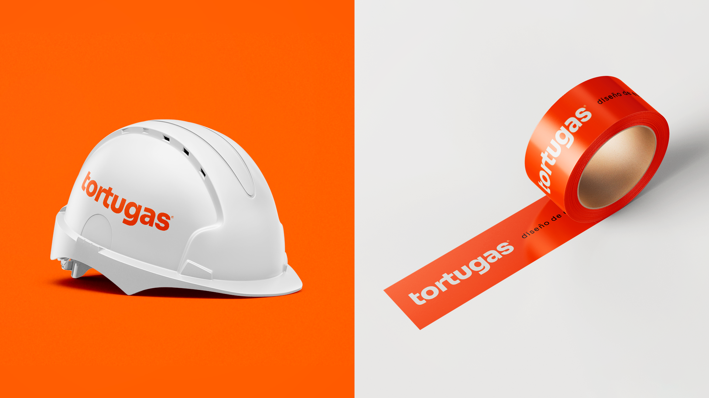
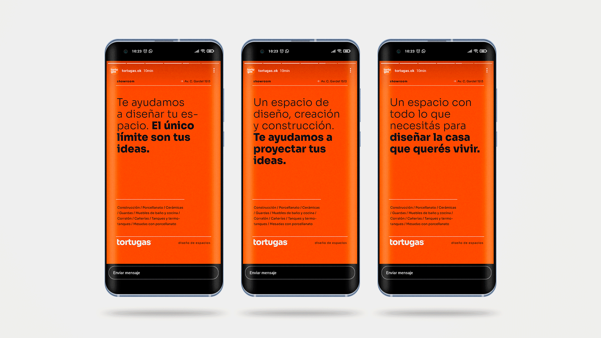
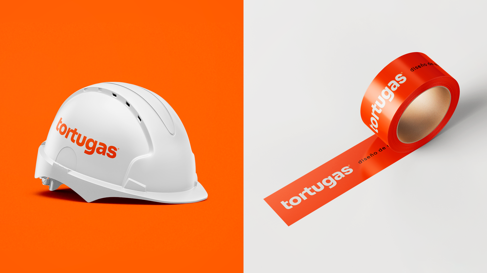
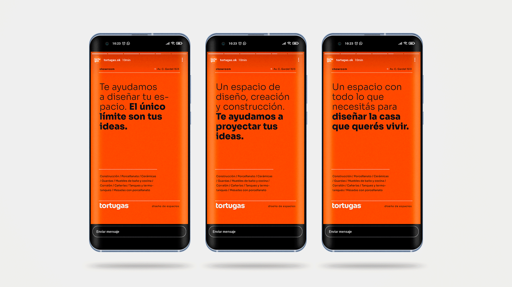
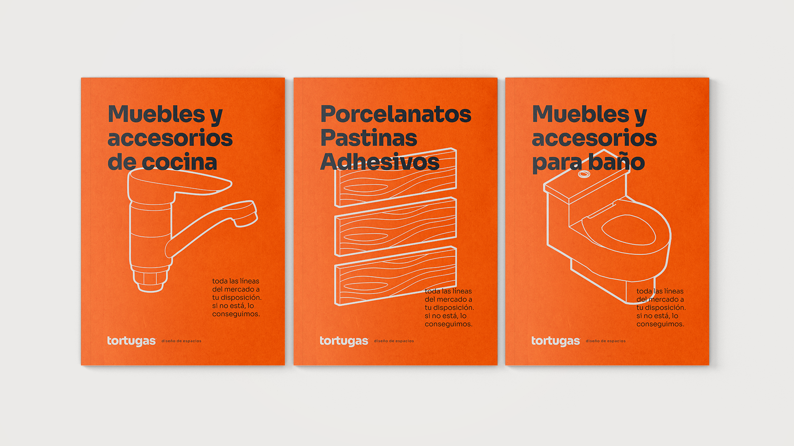
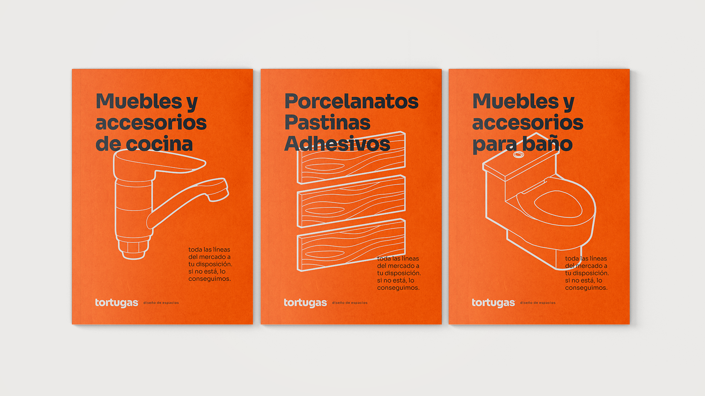

2020
Branding
Digital marketing
Editorial
Merlo, San Luis
Tortugas es una empresa dedicada a la construcción. Brinda un servicio integral para que cada cliente puede proyectar y concretar sus ideas. Entre sus actividades se destacan la venta de materiales y accesorios para construcción y decoración, la fabricación de revestimientos y mesadas, el servicio de mano de obra y alquiler de maquinarias y la bio-construcción.
En resumen: un espacio de diseño, creación y construcción, para proyectar las ideas.
A Zahir se le encomendó rediseñar la identidad para transmitir no solo las actividades, sino la voluntad de la empresa de solucionar integralmente las necesidades de construcción de cada cliente. Propusimos un sistema inspirado en formas simples, basados en retículas constructivas, líneas y estructuras.
Tortugas, un espacio con todo lo que necesitás para diseñar la casa que querés vivir.
Tortugas is a construction company. It provides an integral variety of services for their clients to project and realize their ideas. Their activities includes commercialization of construction and decoration materials, manufacture of coatings and countertops, service of construction and bio-construction, and rental of machinery.
In short: a space for design, creation and construction, to project ideas.
Zahir was commissioned to redesign the identity to convey not only the activities, but also the company's will to fully solve the construction needs of each client. We proposed a system inspired by simple shapes, based on constructive grids, lines and structures.
Tortugas, a space with everything you need to design the house you want to live in.
 




 
